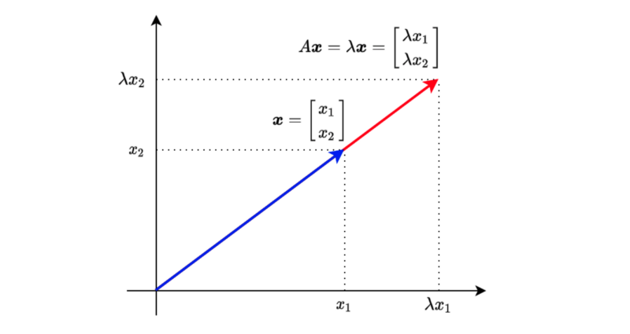
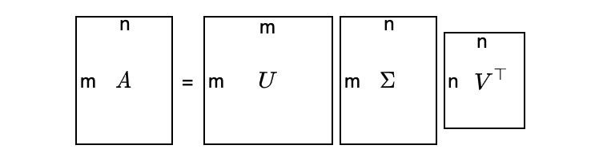
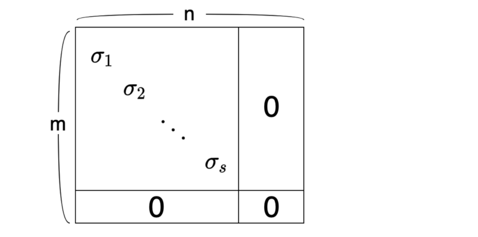

Matrix Decomposition Demystified
Eigen Decomposition, SVD, and Pseudo-inverse Matrix Made Easy

1 Matrix Decomposition
In this article, we discuss the following Matrix Decomposition topics:
- Square Matrix
- Eigenvalue and Eigenvector
- Symmetric Matrix
- Eigen Decomposition
- Orthogonal Matrix
- Singular Value Decomposition
- PSeudo-inverse Matrix
2 Square Matrix
Eigen Decomposition works only with square matrices.
As a quick reminder, let’s look at a square matrix. In square matrices, the number of rows and columns are the same.
For example,
\[ A = \begin{bmatrix} 4 & 1 \\ 3 & 2 \end{bmatrix} \]
That was easy. Let’s continue with Eigenvalue and Eigenvector concepts.
3 Eigenvalue and Eigenvector
When a square matrix A and a vector \(x\) have the following relationship:
\[ A \mathbf{x} = \lambda \mathbf{x} \]
, we call λ eigenvalue and the vector x eigenvector. λ is a scalar.
The above means that multiplying vector \(x\) with matrix \(A\) produces the same result as multiplying vector \(x\) with scalar value \(\lambda\).

Let’s move everything to the left side of the equation to find the condition for having eigenvalues and eigenvectors.
\[ (A - \lambda I) \mathbf{x} = \mathbf{0} \]
For vector \(x\) to be non-zero, no inverse matrix of \((A— \lambda I)\) should exist. In other words, $(A — I) $’s determinant must be zero.
\[ \det(A - \lambda I) = 0 \]
Let’s use the 2x2 square matrix as an example to calculate the determinant:
\[ A = \begin{bmatrix} 4 & 1 \\ 3 & 2 \end{bmatrix} \]
So, \((A — \lambda I)\) is:
\[ A - \lambda I = \begin{bmatrix} 4 - \lambda & 1 \\ 3 & 2 - \lambda \end{bmatrix} \]
And we calculate the determinant (and we want it to be zero):
\[ \begin{aligned} \det(A - \lambda I) &= \begin{vmatrix} 4 - \lambda & 1 \\ 3 & 2 - \lambda \end{vmatrix} \\\\ &= (4 - \lambda)(2 - \lambda) - 3 \\\\ &= 8 - 6\lambda + \lambda^2 - 3 \\\\ &= \lambda^2 - 6\lambda + 5 \\\\ &= (\lambda - 1)(\lambda - 5) \\\\ &= 0 \end{aligned} \]
Therefore, \(\lambda\) is either 1 or 5.
Let’s define the eigenvector as follows:
\[ \mathbf{x} = \begin{bmatrix} x_1 \\ x_2 \end{bmatrix} \]
As a reminder, we have the following equation for eigenvalue and eigenvector:
\[ (A - \lambda I) = 0 \]
We can calculate the eigenvector \(x\) for \(\lambda=1\) as follows:
\[ \begin{aligned} A &= \begin{bmatrix} 4 - 1 & 1 \\ 3 & 2 - 1 \end{bmatrix} \begin{bmatrix} x_1 \\ x_2 \end{bmatrix} = \begin{bmatrix} 0 \\ 0 \end{bmatrix} \\\\ &\therefore 3 x_1 + x_2 = 0 \end{aligned} \]
To satisfy the above conditions, \(x_1\) and \(x_2\) are:
\[ \begin{aligned} x_1 &= -\frac{1}{3} t \\ x_2 &= t \end{aligned} \]
Although t can be any value, we often make the L2 norm to be a size of 1 since, otherwise, we have an infinite number of possible solutions:
\[ x_1^2 + x_2^2 = 1 \]
The eigenvector for the eigenvalue \(\lambda=1\) is:
\[ \mathbf{x} = \begin{bmatrix} -\frac{1}{\sqrt{10}} \\ \frac{3}{\sqrt{10}} \end{bmatrix} \]
or
\[ \mathbf{x} = \begin{bmatrix} \frac{1}{\sqrt{10}} \\ -\frac{3}{\sqrt{10}} \end{bmatrix} \]
They are the same, except that one vector direction is the opposite. So, I’ll choose the first one as the eigenvector for \(\lambda=1\).
Let’s make sure this works as intended:
\[ \begin{aligned} A\mathbf{x} &= \begin{bmatrix} 4 & 1 \\ 3 & 2 \end{bmatrix} \begin{bmatrix} -\frac{1}{\sqrt{10}} \\ \frac{3}{\sqrt{10}} \end{bmatrix} \\\\ &= \begin{bmatrix} 4 \cdot -\frac{1}{\sqrt{10}} + 1 \cdot \frac{3}{\sqrt{10}} \\ 3 \cdot -\frac{1}{\sqrt{10}} + 2 \cdot \frac{3}{\sqrt{10}} \end{bmatrix} \\\\ & = \begin{bmatrix} -\frac{1}{\sqrt{10}} \\ \frac{3}{\sqrt{10}} \end{bmatrix} \\\\ &= 1 \mathbf{x} \end{aligned} \]
We can solve for \(\lambda=5\) using the same process:
\[ \mathbf{x} = \begin{bmatrix} \frac{1}{sqrt{2}} \\ \frac{1}{sqrt{2}} \end{bmatrix} \]
For 3×3 or larger matrices, it becomes too tedious to calculate all that manually. We can write a Python script with NumPy to do the same:
import numpy as np
A = np.array([
[1, 2, 3],
[4, 5, 6],
[7, 8, 9]])
print('A=')
print(A)
print()
values, vectors = np.linalg.eig(A)
print('eigenvalues')
print(values)
print()
print('eigenvectors')
print(vectors)Below is the output:
A=
[[1 2 3]
[4 5 6]
[7 8 9]]
eigenvalues
[ 1.61168440e+01 -1.11684397e+00 -1.30367773e-15]
eigenvectors
[[-0.23197069 -0.78583024 0.40824829]
[-0.52532209 -0.08675134 -0.81649658]
[-0.8186735 0.61232756 0.40824829]]We can confirm they work as expected:
λ = values[0]
x = vectors[:, 0]
print('λ * x')
print(λ * x)
print()
print('A @ x')
print(A @ x)Below is the output:
λ * x
[ -3.73863537 -8.46653421 -13.19443305]
A @ x
[ -3.73863537 -8.46653421 -13.19443305]This works fine but if you want to keep the vectors in column format, you can do the following:
λ = values[0]
x = vectors[:, 0:1]
print('λ * x')
print(λ * x)
print()
print('A @ x')
print(A @ x)Below is the output:
λ * x
[[ -3.73863537]
[ -8.46653421]
[-13.19443305]]
A @ x
[[ -3.73863537]
[ -8.46653421]
[-13.19443305]]4 Symmetric Matrix
Eigenvectors of a symmetric matrix are orthogonal to each other. This fact will become helpful later on. So, let’s prove it here.
Suppose \(\lambda_1\) and \(\lambda_2\) (\(\lambda_1 \ne \lambda_2\)) are eigenvalues, and \(\mathbf{x}_1\) and \(\mathbf{x}_2\) are the corresponding eigenvectors:
\[ \begin{aligned} \lambda_1 \mathbf{x}_1 \cdot \mathbf{x}_2 &= (\lambda_1 \mathbf{x}_1)^\top \mathbf{x}_2 \\ &= (A \mathbf{x}_1)^\top \mathbf{x}_2 \\ &= \mathbf{x}_1^\top A^\top \mathbf{x}_2 \\ &= \mathbf{x}_1^\top A \mathbf{x}_2 \qquad \text{A is symmetric} \\ &= \mathbf{x}_1^\top \lambda_2 \mathbf{x}_2 \\ &= \lambda_2 \mathbf{x}_1^\top \mathbf{x}_2 \\ &= \lambda_2 \mathbf{x}_1 \cdot \mathbf{x}_2 \\ \end{aligned} \]
Therefore,
\[ \lambda_1 \mathbf{x}_1 \cdot \mathbf{x}_2 = \lambda_2 \mathbf{x}_1 \cdot \mathbf{x}_2 \]
However, \(\lambda_1 \ne \lambda_2\). As such, the following must be true:
\[ \mathbf{x}_1 \cdot \mathbf{x}_2 = \mathbf{0} \]
Therefore, eigenvectors of a symmetric matrix are orthogonal to each other.
Now we are ready to discuss how Eigen Decomposition works.
5 Eigen Decomposition
Using eigenvalues and eigenvectors, we can decompose a square matrix A as follows:
\[ A = Q \Lambda Q^{-1} \]
Q is a matrix that has eigenvectors in the columns.
\[ Q = [ \mathbf{x}_1 \ \mathbf{x}_2 \ \dots \ \mathbf{x}_n] \]
\(\Lambda\) (uppercase lambda) is a diagonal matrix that has eigenvalues as the diagonal elements:
\[ \Lambda = \begin{bmatrix} \lambda_1 & 0 & \dots & 0 \\ 0 & \lambda_2 & \dots & 0 \\ \vdots & \vdots & \ddots & \vdots \\ 0 & 0 & \dots & \lambda_n \end{bmatrix} \]
We put eigenvalues in descending order to make the diagonal matrix \(\Lambda\) unique:
\[ \lambda_1 \gt \lambda_2 \gt \dots \gt \lambda_n \]
To prove that such Eigen Decomposition is possible, we adjust the equation slightly:
\[ \begin{aligned} A &= Q \Lambda Q^{-1} \\ AQ &= Q \Lambda \end{aligned} \]
And we will show that \(AQ = Q \Lambda\) is true.
\[ \begin{aligned} AQ &= A [ \mathbf{x}_1 \ \mathbf{x}_2 \ \dots \ \mathbf{x}_n ] \\ &= [ A\mathbf{x}_1 \ A\mathbf{x}_2 \ \dots \ A\mathbf{x}_n] \\ &= [ \lambda_1 \mathbf{x}_1 \ \lambda_2 \mathbf{x}_2 \ \dots \ \lambda_n \mathbf{x}_n] \\ &= [ \mathbf{x}_1 \ \mathbf{x}_2 \ \dots \ \mathbf{x}_n ] \begin{bmatrix} \lambda_1 & 0 & \dots & 0 \\ 0 & \lambda_2 & \dots & 0 \\ \vdots & \vdots & \ddots & \vdots \\ 0 & 0 & \dots & \lambda_n \end{bmatrix} \\ &= Q \Lambda \end{aligned} \]
In other words, AQ is equivalent to each eigenvector inside matrix Q multiplied by the corresponding eigenvalue.
So, we have proved that Eigen Decomposition is possible.
Let’s try Eigen Decomposition with Numpy:
import numpy as np
A = np.array([
[1, 2, 3],
[4, 5, 6],
[7, 8, 9]], dtype=np.float64)
print('A=')
print(A)
print()
# Eigenvalue and Eigenvector
values, vectors = np.linalg.eig(A)
Λ = np.diag(values)
Q = vectors
QΛQinv = Q @ Λ @ np.linalg.inv(Q)
print('QΛQinv=')
print(QΛQinv)Below is the output:
A=
[[1. 2. 3.]
[4. 5. 6.]
[7. 8. 9.]]
QΛQinv=
[[1. 2. 3.]
[4. 5. 6.]
[7. 8. 9.]]6 Orthogonal Matrix
As mentioned before, when matrix A is symmetric, eigenvectors in matrix Q are orthogonal to each other.
When we also make the L2 norm of all eigenvectors 1 (orthonormal), we call Q an orthogonal matrix.
When Q is an orthogonal matrix,
\[ Q Q^\top = I \]
As such,
\[ Q^\top = Q^{-1} \]
Therefore,
\[ A = Q \Lambda Q^{-1} = Q \Lambda Q^\top \]
The above fact will be helpful when we discuss the singular value decomposition.
Let’s do QΛQ^T with Numpy:
import numpy as np
# Asymmetric Matrix
A = np.array([
[1, 2, 3],
[2, 5, 6],
[3, 6, 9]], dtype=np.float64)
print('A=')
print(A)
print()
# Eigenvalue and Eigenvector
values, vectors = np.linalg.eig(A)
Λ = np.diag(values)
Q = vectors
QΛQT = Q @ Λ @ Q.T
print('QΛQT=')
print(QΛQT)Below is the output:
A=
[[1. 2. 3.]
[2. 5. 6.]
[3. 6. 9.]]
QΛQT=
[[1. 2. 3.]
[2. 5. 6.]
[3. 6. 9.]]It’s fun to see the theory works precisely as expected.
Also, let’s check Q is an orthogonal matrix:
QQT = Q @ Q.T
print('QQT=')
print(QQT)Below is the output:
QQT=
[[ 1.00000000e+00 5.55111512e-17 -1.80411242e-16]
[ 5.55111512e-17 1.00000000e+00 0.00000000e+00]
[-1.80411242e-16 0.00000000e+00 1.00000000e+00]]Here we see the limitation of numerical computing. Non-diagonal elements should be 0; instead, some are very small values.
So far, we are dealing with square matrices as Eigen Decomposition works only with square matrices. Next, we’ll see SVD that works with non-square matrices.
7 Singular Value Decomposition
SVD exists for any matrix, even for non-square matrices.
Suppose matrix A is m×n (m ≠ n), we can still decompose matrix A as follows:
\[ A = U \Sigma V^\top \]
- \(U\) is an orthogonal matrix (m×m).
- \(\Sigma\) is a diagonal matrix (m×n).
- \(V\) is an orthogonal matrix (n×n).
It looks too abstract — a visualization may help:

\(\Sigma\) has the following structure. The top-left part is a diagonal matrix with singular values (more on this later) in the diagonal elements. Other elements of \(\Sigma\) are all zeros.

As a convention, we sort the singular values in descending order:
\[ \sigma_1 \ \ge \ \sigma_2 \ \ge \ \dots \ \ge \ \sigma_s \ \ge \ 0 \]
The number of singular values is the same as the rank of matrix A, which is the number of independent column vectors.
So, how can we create such a decomposition?
The main idea is that we make a square matrix like the one below:
\[ A A^\top \]
or
\[ A^\top A \]
We can choose either, but using the one with fewer elements is easier.
For example, if matrix A is 100×10,000. \(AA^T\) is 100×100, and \(A^TA\) is 10,000×10,000. So, I would choose \(AA^T\). How about you?
Suppose we perform SVD on matrix A using \(AA^T\):
\[ \begin{aligned} AA^\top &= U \Sigma V^\top (U \Sigma V^\top)^\top \\ &= U \Sigma V^\top V \Sigma^\top U^\top \qquad \text{V is an orthogonal matrix} \\ &= U \Sigma \Sigma^\top U^\top \\ &= U \Sigma_m^2 U^\top \end{aligned} \]
where
\[ \Sigma_m^2 = \Sigma \Sigma^\top \]
is a diagonal matrix (m×m) with squared sigmas as the top-left diagonal elements. These values are eigenvalues of AA^T since we have eigen-decomposed \(AA^T\) as follows:
\[ AA^\top = U \Sigma_m^2 U^\top \]
The column vectors in matrix U are eigenvectors because:
\[ A A^\top U = U \Sigma_m^2 \qquad \text{U is an orthogonal matrix} \]
In other words, if we can eigen-decompose \(AA^T\), we can calculate U and diagonal sigmas, and then we can calculate V.
We can consider the same calculation with \(A^TA\):
\[ \begin{aligned} A^\top A &= (U \Sigma V^\top)^\top U \Sigma V^\top \\ &= V \Sigma^\top U^\top U \Sigma V^\top \qquad \text{U is an orthogonal matrix} \\ &= V \Sigma^\top \Sigma V^\top \\ &= V \Sigma_n^2 V^\top \end{aligned} \]
where
\[ \Sigma_n^2 = \Sigma^\top \Sigma \]
is a diagonal matrix (n×n) with squared sigmas as the top-left diagonal elements. These values are eigenvalues since we eigen-decompose \(A^TA\) as follows:
\[ A^\top A = V \Sigma_n^2 V^\top \]
The column vectors in matrix V are eigenvectors because:
\[ A^\top AV = V \Sigma_n^2 \]
In other words, if we can eigen-decompose A^TA, we can calculate V and diagonal sigmas, and then we can calculate U.
So, if we eigen-decompose either \(AA^T\) or \(A^TA\), we can perform singular value decomposition.
Again, we should choose a smaller one of \(AA^T\) or \(A^TA\) to make our life easier.
Let’s try SVD with Numpy:
import numpy as np
A = np.array([
[1, 2],
[3, 4],
[5, 6]], dtype=np.float64)
print('A=')
print(A)
print()
U, S, VT = np.linalg.svd(A)
print('U=')
print(U)
print()
print('S=')
print(S)
print()
print('VT=')
print(VT)
print()Below is the output:
A=
[[1. 2.]
[3. 4.]
[5. 6.]]
U=
[[-0.2298477 0.88346102 0.40824829]
[-0.52474482 0.24078249 -0.81649658]
[-0.81964194 -0.40189603 0.40824829]]
S=
[9.52551809 0.51430058]
VT=
[[-0.61962948 -0.78489445]
[-0.78489445 0.61962948]]Let’s set up matrix Σ as follows:
Σ = np.zeros_like(A, dtype=np.float64)
Σ[:2] = np.diag(S)
print('Σ=')
print(Σ)
print()Below is the output:
Σ=
[[9.52551809 0. ]
[0. 0.51430058]
[0. 0. ]]Now, we can confirm \(A = U\Sigma V^\top\).
print('UΣVT=')
print(U @ Σ @ VT)
print()Below is the output:
UΣVT=
[[1. 2.]
[3. 4.]
[5. 6.]]Now that we know how SVD works, we are ready to work on pseudo-inverse matrices.
8 Pseudo-inverse Matrix
An inverse matrix does not always exist, even for a square matrix. However, a pseudo-inverse — also called Moore Penrose inverse — matrix exists for non-square matrices.
For example, matrix A is m×n.
\[ A \mathbf{x} = \mathbf{y} \]
Using a pseudo-inverse matrix \(A^+\), we can perform the following conversion:
\[ \mathbf{x} = A^+ \mathbf{y} \]
We define a pseudo-inverse matrix \(A^+\) as:
\[ A+ = VD^+U^\top \]
V and U are from SVD:
\[ A = U\Sigma V^\top \]
We make \(D^+\) by transposing \(\Sigma\) and inverse all the diagonal elements. Suppose \(\Sigma\) is defined as follows:
\[ \Sigma = \begin{bmatrix} \sigma_1 & & & & & \\ & \sigma_2 & & & & \\ & & \ddots & & & & \\ & & & \sigma_s & & & \\ & & & & 0 & & \\ & & & & & \ddots & \\ & & & & & & 0 \end{bmatrix} \]
Then \(D^+\) is defined as follows:
\[ D^+ = \begin{bmatrix} \frac{1}{\sigma_1} & & & & & \\ & \frac{1}{\sigma_2} & & & & \\ & & \ddots & & & & \\ & & & \frac{1}{\sigma_s} & & & \\ & & & & 0 & & \\ & & & & & \ddots & \\ & & & & & & 0 \end{bmatrix} \]
Now, we can see how \(A^+A\) works:
\[ \begin{aligned} A^+ A &= (VD^+U^\top)(U\Sigma V^\top) \\ &= VD^+\Sigma V^\top \qquad\qquad \text{Note: } D^+\Sigma = I \\ &= VV^\top \\ &= I \end{aligned} \]
In the same way, \(AA^+ = I\).
In summary, if we can perform SVD on matrix A, we can calculate A^+ by VD^+UT, which is a pseudo-inverse matrix of A.
Let’s try Pseudo-inverse with Numpy:
import numpy as np
A = np.array([
[1, 2],
[3, 4],
[5, 6]], dtype=np.float64)
AP = np.linalg.pinv(A)
print(‘AP @ A’)
print(AP @ A)The below is the output:
AP @ A
[[ 1.0000000000000004e+00 0.0000000000000000e+00]
[-4.4408920985006262e-16 9.9999999999999956e-01]]Congratulations! You’ve made it this far. I hope you’ve enjoyed it!
9 References
- Eigendecomposition of a matrix
Wikipedia - Singular Value Decomposition
Wikipedia - Moore Penrose inverse
Wikipedia - Up-sampling with Transposed Convolution